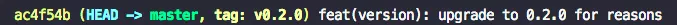

# npm 相关参数
# 前言
npm在前端开发流程中提供了非常完善的自动化工具链，已成为每个前端开发者必备的工具，但是同样由于其强大性导致很多前端开发者只会简单的使用它。本文将总结在日常开发中所需要的npm知识点，以便开发者们更好的将npm运用在实际开发中。
# 内容
# 一、npm 处理 node_modules 目录结构
一个项目开发、上线所依赖的插件包都存放在node_modules中。虽然在实际开发中无需关注这个目录里面的文件结构细节，但了解node_modules中的内容可以帮助我们更好的理解npm组织这些文件的机制。
假设项目App中有如下三个依赖：
"dependencies": {
A: "1.0.0",
B: "1.0.0",
C: "1.0.0"
}
2
3
4
5
A、B、C三个模块又有如下依赖：
A@1.0.0 -> D@1.0.0
B@1.0.0 -> D@2.0.0
C@1.0.0 -> D@1.0.0
2
3
4
5
# 1.1 npm 2.x - 嵌套结构
npm 2.x安装依赖方式比较简单直接，以递归的方式，按照包依赖的树形结构下载填充本地目录结构，也就是说每个包都会将该包依赖安装到当前包所在的node_modules目录中。
执行npm install后，项目App的node_modules会变成如下目录结构：
├── node_modules
│ ├── A@1.0.0
│ │ └── node_modules
│ │ │ └── D@1.0.0
│ ├── B@1.0.0
│ │ └── node_modules
│ │ │ └── D@2.0.0
│ └── C@1.0.0
│ │ └── node_modules
│ │ │ └── D@1.0.0
2
3
4
5
6
7
8
9
10
很显然这样的依赖组织结构，有如下优点：
- 层级结构明显
- 简单的实现多版本兼容
- 保证了对依赖包无论是安装还是删除都会有统一的行为和结构
但是缺点也一样明显：
- 可能造成相同模块大量冗余问题
- 可能造成目录结构嵌套比较深的问题
# 1.2 npm 3.x - 扁平结构
npm 3.x则采用了扁平化的结构来安装组织node_modules。也就是在执行npm install的时候，按照package.json里依赖的顺序依次解析，遇到新的包就把它安装在第一级目录，后续安装如果遇到一级目录已经存在的包，会先按照约定版本判断版本，如果符合版本约定则忽略，否则会按照npm 2.x的方式依次挂在依赖包目录下。
还以项目App为例，在npm 3.x环境下，执行npm install后，node_modules会变成如下目录结构：
├── node_modules
│ ├── A@1.0.0
│ ├── D@1.0.0
│ ├── B@1.0.0
│ │ └── node_modules
│ │ │ └── D@2.0.0
│ └── C@1.0.0
2
3
4
5
6
7
模块的安装次序决定了
node_modules中的目录结构，npm会优先将模块安装在根目录下的node_modules中。
再在项目中安装模块E@1.0.0（依赖于模块D@2.0.0），目录结构变为：
├── node_modules
│ ├── A@1.0.0
│ ├── D@1.0.0
│ ├── B@1.0.0
│ │ └── node_modules
│ │ │ └── D@2.0.0
│ └── C@1.0.0
│ ├── E@1.0.0
│ │ └── node_modules
│ │ │ └── D@2.0.0
2
3
4
5
6
7
8
9
10
B、E模块下都包含了依赖的模块D@2.0.0，存在代码冗余的情况。
再在项目中安装模块F@1.0.0（依赖于模块D@1.0.0）。由于D@1.0.0已经存在于项目根目录下的node_modules下，所以在安装 F 模块的时候，无需再在其依赖包中安装D@1.0.0模块，目录结构变为：
├── node_modules
│ ├── A@1.0.0
│ ├── D@1.0.0
│ ├── B@1.0.0
│ │ └── node_modules
│ │ │ └── D@2.0.0
│ └── C@1.0.0
│ ├── E@1.0.0
│ │ └── node_modules
│ │ │ └── D@2.0.0
│ └── F@1.0.0
2
3
4
5
6
7
8
9
10
11
从以上结构可以看出，npm 3.x并没有完美的解决npm 2.x中的问题，甚至还会退化到npm 2.x的行为。
为了解决目录中存在很多副本的情况，（在A、C模块的依赖模块D升级到2.0.0前提下）可以通过npm dedupe指令把所有二级的依赖模块 D@2.0.0 重定向到一级目录下：
├── node_modules
│ ├── A@1.0.0
│ ├── D@2.0.0
│ ├── B@1.0.0
│ └── C@1.0.0
│ ├── E@1.0.0
│ └── F@1.0.0
2
3
4
5
6
7
node_modules路径查找机制：模块再找对应的依赖包时，nodejs 会尝试从当前模块所在目录开始，尝试在它的node_modules文件夹里加载相应模块，如果没有找到，那么就再向上一级目录移动，直到全局安装路径中的node_modules为止。
# 1.3 npm 5.x - package-lock.json
从npm 5.x开始，安装组织node_modules和npm 3.x一样采用了扁平的方式，最大的变化是增加了package-lock.json文件。
npm为了让开发者在安全的前提下使用最新的依赖包，在package.json中通常做了锁定大版本的操作，这样在每次npm install的时候都会拉取依赖包大版本下的最新的版本。这种机制最大的一个缺点就是当有依赖包有小版本更新时，可能会出现协同开发者的依赖包不一致的问题。
package-lock.json文件精确描述了node_modules目录下所有的包的树状依赖结构，每个包的版本号都是完全精确的。以sass-loader在package-lock.json中为例：
"dependencies": {
"sass-loader": {
"version": "7.1.0",
"resolved": "http://registry.npm.taobao.org/sass-loader/download/sass-loader-7.1.0.tgz",
"integrity": "sha1-Fv1ROMuLQkv4p1lSihly1yqtBp0=",
"dev": true,
"requires": {
"clone-deep": "^2.0.1",
"loader-utils": "^1.0.1",
"lodash.tail": "^4.1.1",
"neo-async": "^2.5.0",
"pify": "^3.0.0",
"semver": "^5.5.0"
},
"dependencies": {
"pify": {
"version": "3.0.0",
"resolved": "http://registry.npm.taobao.org/pify/download/pify-3.0.0.tgz",
"integrity": "sha1-5aSs0sEB/fPZpNB/DbxNtJ3SgXY=",
"dev": true
}
}
}
}
2
3
4
5
6
7
8
9
10
11
12
13
14
15
16
17
18
19
20
21
22
23
24
package-lock.json的详细描述主要由version、resolved、integrity、dev、requires、dependencies这几个字段构成：
version：包唯一的版本号resolved：安装源integrity：表明包完整性的 hash 值（验证包是否已失效）dev：如果为 true，则此依赖关系仅是顶级模块的开发依赖关系或者是一个的传递依赖关系requires：依赖包所需要的所有依赖项，对应依赖包package.json里dependencies中的依赖项dependencies：依赖包node_modules中依赖的包，与顶层的dependencies一样的结构
在上面的package-lock.json文件中可以发现，在requires和dependencies中都存在pify依赖项。那我们顺便去node_modules里面探下究竟：
- 打开根目录的
node_modules会发现安装了sass-loader所需要的所有依赖包，这些依赖包中除了pify以外，所有依赖包的大版本号都与sass-loader所需要的一致。 - 到根目录的
node_modules找到pify依赖包，发现版本为4.0.1。 - 找到
sass-loader项目依赖包，打开其node_modules发现其中也存在个pify依赖包，但版本为3.0.0。这个版本的sass-loader真正依赖的是这个版本的pify。
通过以上几个步骤，也验证了之前阐述过的npm 5.x是扁平化处理依赖的方式。
在开发一个应用时，建议把package-lock.json文件提交到代码版本仓库，从而让你的团队成员、运维部署人员或CI系统可以在执行npm install时安装的依赖版本都是一致的。
但是在开发一个库时，则不应把package-lock.json文件发布到仓库中。实际上，npm也默认不会把package-lock.json文件发布出去。之所以这么做，是因为库项目一般是被其他项目依赖的，在不写死的情况下，就可以复用主项目已经加载过的包，而一旦库依赖的是精确的版本号那么可能会造成包的冗余。
# 二、npm 中的依赖包
- 依赖包分类
- 依赖包版本号
- 依赖包版本管理
# 2.1 依赖包分类
在node中其实总共 5 种依赖：
- dependencies - 业务依赖
- devDependencies - 开发依赖
- peerDependencies - 同伴依赖
- bundledDependencies / bundleDependencies - 打包依赖
- optionalDependencies - 可选依赖
作为npm的使用者，我们常用的依赖是dependencies和devDependencies，剩下三种依赖则是作为包的发布才会使用到的字段。
dependencies
这种依赖在项目最终上线或者发布npm包时所需要，即其中的依赖项应该属于线上代码的一部分。比如框架vue，第三方的组件库element-ui等，这些依赖包都是必须装在这个选项里供生产环境使用。
通过命令npm install/i packageName -S/--save把包装在此依赖项里。如果没有指定版本，直接写一个包的名字，则安装当前npm仓库中这个包的最新版本。如果要指定版本的，可以把版本号写在包名后面，比如npm i vue@3.0.1 -S。
从
npm 5.x开始，可以不用手动添加-S/--save指令，直接执行npm i packageName把依赖包添加到dependencies中去。
devDependencies
这种依赖只在项目开发时所需要，即其中的依赖项不应该属于线上代码的一部分。比如构建工具webpack、gulp，预处理器babel-loader、scss-loader，测试工具e2e、chai等，这些都是辅助开发的工具包，无须在生产环境使用。
通过命令npm install/i -D/--save-dev把包安装成开发依赖。如果想缩减安装包，可以使用命令npm i --production忽略开发依赖，只安装基本依赖，这通常在线上机器（或者QA环境）上使用。
**千万别以为只有在
dependencies中的模块才会被一起打包，而在devDependencies中的不会！模块能否被打包，取决于项目里是否被引入了该模块！**在业务项目中dependencies和devDependencies没有什么本质区别，只是单纯的一个规范作用，在执行npm i时两个依赖下的模块都会被下载；而在发布npm包的时候，包中的dependencies依赖项在安装该包的时候会被一起下载，devDependencies依赖项则不会。
peerDependencies
这种依赖的作用是提示宿主环境去安装插件在peerDependencies中所指定依赖的包，然后插件所依赖的包永远都是宿主环境统一安装的npm包，最终解决插件与所依赖包不一致的问题。
这句话听起来可能有点拗口，举个例子来给大家说明下。element-ui@2.6.3只是提供一套基于vue的ui组件库，但它要求宿主环境需要安装指定的vue版本，所以你可以看到element项目中的package.json中具有一项配置：
"peerDependencies": {
"vue": "^2.5.16"
}
2
3
它要求宿主环境安装3.0.0 > vue@ >= 2.5.16的版本，也就是element-ui的运行依赖宿主环境提供的该版本范围的vue依赖包。
在安装插件的时候，peerDependencies在npm 2.x和npm 3.x中表现不一样：
在npm 2.x中，安装包中peerDependencies所指定的依赖会随着npm install packageName一起被强制安装，并且peerDependencies中指定的依赖会安装在宿主环境中，所以不需要在宿主环境的package.json文件中指定对所安装包中peerDependencies内容的依赖。
在npm 3.x中，不会再要求peerDependencies所指定的依赖包被强制安装，npm 3.x只会在安装结束后检查本次安装是否正确，如果不正确会给用户打印警告提示，比如提示用户有的包必须安装或者有的包版本不对等。
大白话：如果你安装我，那么你最好也要按照我的要求安装
A、B和C。
bundledDependencies
这种依赖跟npm pack打包命令有关。假设package.json中有如下配置：
{
"name": "font-end",
"version": "1.0.0",
"dependencies": {
"fe1": "^0.3.2",
...
},
"devDependencies": {
...
"fe2": "^1.0.0"
},
"bundledDependencies": [
"fe1",
"fe2"
]
}
2
3
4
5
6
7
8
9
10
11
12
13
14
15
16
执行打包命令npm pack，会生成front-end-1.0.0.tgz压缩包，并且该压缩包中包含fe1和fe2两个安装包，这样使用者执行npm install front-end-1.0.0.tgz也会安装这两个依赖。
在
bundledDependencies中指定的依赖包，必须先在dependencies和devDependencies声明过，否则打包会报错。
optionalDependencies
这种依赖中的依赖项即使安装失败了，也不影响整个安装的过程。需要注意的是，如果一个依赖同时出现在dependencies和optionalDependencies中，那么optionalDependencies会获得更高的优先级，可能造成一些预期之外的效果，所以尽量要避免这种情况发生。
在实际项目中，如果某个包已经失效，我们通常会寻找它的替代者，或者换一个实现方案。不确定的依赖会增加代码判断和测试难度，所以这个依赖项还是尽量不要使用。
# 2.2 依赖包版本号
npm采用了semver规范作为依赖版本管理方案。
按照semver的约定，一个npm依赖包的版本格式一般：主版本号.次版本号.修订号(x.y.z)，每个号的含义是：
主版本号(也叫大版本，
major version)大版本的发动很可能是一次颠覆性的发动，也就意味着可能存在与低版本不兼容的
API或者用法，（比如vue 2->3）。次版本号(也叫小版本，
minor version)小版本的发动应当兼容同一个大版本内的
API和用法，因此应该让开发者无感。所以我们通常只说大版本号，很少会精确到小版本号。如果大版本是 0 的话，表示软件处于初始阶段，一切都可能随时被改变，可能每个小版本之间也会存在不兼容性。所以在选择依赖时，尽量避开大版本号是 0 的包。
修订号(也叫补丁版本，
patch)一般用于修改
bug或者很细微的变更，也需要保持向前兼容。
常见的几个版本格式如下：
- “1.2.3”
表示精确版本号。任何其他版本号都不匹配。在一些比较重要的线上项目中，建议使用这种方式锁定版本。
- “^1.2.3”
表示兼容补丁和小版本更新的版本号。官方的定义是“能够兼容除了最左侧的非 0 版本号之外的其他变化”(Allows changes that do not modify the left-most non-zero digit in the [major, minor, patch] tuple)。这句话很拗口，举几个例子大家就明白了：
"^1.2.3" 等价于 ">= 1.2.3 < 2.0.0"。即只要最左侧的 "1" 不变，其他都可以改变。所以 "1.2.4", "1.3.0" 都可以兼容。
"^0.2.3" 等价于 ">= 0.2.3 < 0.3.0"。因为最左侧的是 "0"，那么只要第二位 "2" 不变，其他的都兼容，比如 "0.2.4" 和 "0.2.99"。
"^0.0.3" 等价于 ">= 0.0.3 < 0.0.4"。大版本号和小版本号都为 "0" ，所以也就等价于精确的 "0.0.3"。
2
3
4
5
从这几个例子可以看出，^是一个兼具更新和安全的写法，但是对于大版本号为 1 和 0 的版本还是会有不同的处理机制的。
- “~1.2.3”
表示只兼容补丁更新的版本号。关于~的定义分为两部分：如果列出了小版本号（第二位），则只兼容补丁（第三位）的修改；如果没有列出小版本号，则兼容第二和第三位的修改。我们分两种情况理解一下定义：
"~1.2.3" 列出了小版本号 "2"，因此只兼容第三位的修改，等价于 ">= 1.2.3 < 1.3.0"。
"~1.2" 也列出了小版本号 "2"，因此和上面一样兼容第三位的修改，等价于 ">= 1.2.0 < 1.3.0"。
"~1" 没有列出小版本号，可以兼容第二第三位的修改，因此等价于 ">= 1.0.0 < 2.0.0"
2
3
4
5
从这几个例子可以看出，~是一个比^更加谨慎安全的写法，而且~并不对大版本号 0 或者 1 区别对待，所以"~0.2.3" 与 "~1.2.3" 是相同的算法。当首位是 0 并且列出了第二位的时候，两者是等价的，例如 "~0.2.3" 和 "^0.2.3"。
- "1.x" 、"1.X"、1."、"1"、""
表示使用通配符的版本号，x、X、* 和 （空） 的含义相同，都表示可以匹配任何内容。具体来说：
"*" 、"x" 或者 （空） 表示可以匹配任何版本。
"1.x", "1.*" 和 "1" 表示匹配主版本号为 "1" 的所有版本，因此等价于 ">= 1.0.0 < 2.0.0"。
"1.2.x", "1.2.*" 和 "1.2" 表示匹配版本号以 "1.2" 开头的所有版本，因此等价于 ">= 1.2.0 < 1.3.0"。
2
3
4
5
- "1.2.3-beta.1"
带预发布关键词的版本号。先说说几个预发布关键词的定义：
alpha(α)：预览版，或者叫内部测试版；一般不向外部发布，会有很多bug；一般只有测试人员使用。
beta(β)：测试版，或者叫公开测试版；这个阶段的版本会一直加入新的功能；在alpha版之后推出。
rc(release candidate)：最终测试版本；可能成为最终产品的候选版本，如果未出现问题则可发布成为正式版本。
2
3
4
5
以包开发者的角度来考虑这个问题：假设当前线上版本是 "1.2.3"，如果我作了一些改动需要发布版本 "1.2.4"，但我不想直接上线（因为使用 "~1.2.3" 或者 "^1.2.3" 的用户都会直接静默更新），这就需要使用预发布功能。因此我可能会发布 "1.2.4-alpha.1" 或者 "1.2.4-beta.1" 等等。
">1.2.4-alpha.1"表示接受 "1.2.4-alpha" 版本下所有大于 1 的预发布版本。因此 "1.2.4-alpha.7" 是符合要求的，但 "1.2.4-beta.1" 和 "1.2.5-alpha.2" 都不符合。此外如果是正式版本（不带预发布关键词），只要版本号符合要求即可，不检查预发布版本号，例如 "1.2.5", "1.3.0" 都是认可的。
"~1.2.4-alpha.1" 表示 ">=1.2.4-alpha.1 < 1.3.0"。这样 "1.2.5", "1.2.4-alpha.2" 都符合条件，而 "1.2.5-alpha.1", "1.3.0" 不符合。
"^1.2.4-alpha.1" 表示 ">=1.2.4-alpha.1 < 2.0.0"。这样 "1.2.5", "1.2.4-alpha.2", "1.3.0" 都符合条件，而 "1.2.5-alpha.1", "2.0.0" 不符合。
2
3
4
5
版本号还有更多的写法，例如范围（a - b），大于等于号（>=），小于等于号（<=），或（||）等等，因为用的不多，这里不再展开。详细的文档可以参见语义化版本(semver)。它同时也是一个 npm 包，可以用来比较两个版本号的大小，以及是否符合要求等。
# 2.3 依赖包版本管理
npm 2.x/3.x已成为过去式，在npm 5.x以上环境下（版本最好在5.6以上，因为在5.0 ~ 5.6中间对package-lock.json的处理逻辑更新过几个版本，5.6以上才开始稳定），管理项目中的依赖包版本你应该知道（以^版本为例，其他类型版本参照即可）：
- 在大版本相同的前提下，如果一个模块在
package.json中的小版本要大于package-lock.json中的小版本，则在执行npm install时，会将该模块更新到大版本下的最新的版本，并将版本号更新至package-lock.json。如果小于，则被package-lock.json中的版本锁定。
// package-lock.json 中原版本
"clipboard": {
"version": "1.5.10",
},
"vue": {
"version": "2.6.10",
}
// package.json 中修改版本
"dependencies": {
"clipboard": "^1.5.12",
"vue": "^2.5.6"
...
}
// 执行完 npm install 后，package-lock.json 中
"clipboard": {
"version": "1.7.1", // 更新到大版本下的最新版本
},
"vue": {
"version": "2.6.10", // 版本没发生改变
}
2
3
4
5
6
7
8
9
10
11
12
13
14
15
16
17
18
19
20
21
- 如果一个模块在
package.json和package-lock.json中的大版本不相同，则在执行npm install时，都将根据package.json中大版本下的最新版本进行更新，并将版本号更新至package-lock.json。
// package-lock.json 中原版
"clipboard": {
"version": "2.0.4",
}
// package.json 中修改版本
"dependencies": {
"clipboard": "^1.6.1",
}
// 执行完npm install后，package-lock.json 中
//
"clipboard": {
"version": "1.7.1", // 更新到大版本下的最新版本
}
2
3
4
5
6
7
8
9
10
11
12
13
14
如果一个模块在
package.json中有记录，而在package-lock.json中无记录，执行npm install后，则会在package-lock.json生成该模块的详细记录。同理，一个模块在package.json中无记录，而在package-lock.json中有记录，执行npm install后，则会在package-lock.json删除该模块的详细记录。如果要更新某个模块大版本下的最新版本（升级小版本号），请执行如下命令：
npm install packageName
// 或者
npm update packageName
2
3
- 如果要更新到指定版本号（升级大版本号），请执行如下命令：
npm install packageName@x.x.x
- 卸载某个模块，请执行如下命令：
npm uninstall packageName
通过上述的命令来管理依赖包，package.json和package-lock.json中的版本号都将会随之更新。
我们在升级/卸载依赖包的时候，尽量通过命令来实现，避免手动修改
package.json中的版本号，尤其不要手动修改package-lock.json。
# 三、npm scripts 脚本
package.json中的scripts字段可以用来自定义脚本命令，它的每一个属性，对应一段脚本。以vue-cli3为例：
"scripts": {
"serve": "vue-cli-service serve",
...
}
2
3
4
这样就可以通过npm run serve脚本代替vue-cli-service serve脚本来启动项目，而无需每次敲一遍这么冗长的脚本。
- 工作原理
- 用法指南
# 3.1 工作原理
package.json 中的 bin 字段
package.json中的字段bin表示的是一个可执行文件到指定文件源的映射。例如在@vue/cli的package.json中：
"bin": {
"vue": "bin/vue.js"
}
2
3
如果全局安装@vue/cli的话，@vue/cli 源文件会被安装在全局源文件安装目录（/user/local/lib/node_modules）下，而npm会在全局可执行bin文件安装目录（/usr/local/bin）下创建一个指向/usr/local/lib/node_modules/@vue/cli/bin/vue.js文件的名为 vue 的软链接， 这样就可以直接在终端输入vue来执行相关命令。如下图所示：

如果局部安装@vue/cli的话，npm则会在本地项目./node_modules/.bin目录下创建一个指向./node_moudles/@vue/cli/bin/vue.js文件的名为vue的软链接，这个时候需要在终端中输入./node_modules/.bin/vue来执行（也可以使用npx vue命令来执行，npx的作用就是为了方便调用项目内部安装的模块）。
软链接（符号链接）是一类特殊的可执行文件，其包含有一条以绝对路径或相对路径的形式指向其它文件或者目录的引用。在
bin目录下执行ll指令可以查看具体的软链接指向。在对链接文件进行读或写操作的时候，系统会自动把该操作转换为对源文件的操作，但删除链接文件时，系统仅仅删除链接文件，而不删除源文件本身。
PATH 环境变量
在terminal中执行命令时，命令会在PATH环境变量里包含的路径中去寻找相同名字的可执行文件。局部安装的包只在./node_modules/.bin中注册了它们的可执行文件，不会被包含在PATH环境变量中，这个时候在terminal中输入命令将会报无法找到的错误。
那为什么通过npm run可以执行局部安装的命令行包呢？
是因为每当执行npm run时，会自动新建一个Shell，这个Shell会将当前项目的node_modules/.bin的绝对路径加入到环境变量PATH中，执行结束后，再将环境变量PATH恢复原样。
我们来验证下这个说法。首先执行env查看当前所有的环境变量，可以看到 PATH 环境变量为：
PATH=/usr/local/bin:/usr/bin:/bin:/usr/sbin:/sbin
可以看到运行时的PATH环境变量多了两个路径：npm指令路径和项目中node_modules/.bin的绝对路径。
所以，通过npm run可以在不添加路径前缀的情况下直接访问当前项目node_modules/.bin目录里面的可执行文件。
PATH环境变量，是告诉系统，当要求系统运行一个程序而没有告诉它程序所在的完整路径时，系统除了在当前目录下面寻找此程序外，还应到哪些目录下去寻找
# 3.2 用法指南
传入参数
关于scripts中的参数，这里要多说几句。网上有很多不是很准确的说法，经过本人的反复试验node处理scripts参数其实很简单，比如：
"scripts": {
"serve": "vue-cli-service serve",
"serve1": "vue-cli-service --serve1",
"serve2": "vue-cli-service -serve2",
"serve3": "vue-cli-service serve --mode=dev --mobile -config build/example.js"
}
2
3
4
5
6
除了第一个可执行的命令，以空格分割的任何字符串（除了一些 shell 的语法）都是参数，并且都能通过process.argv属性访问。
process.argv属性返回一个数组，这个数组包含了启动node进程时的命令行参数。第一个元素为启动node进程的可执行文件的绝对路径名process.execPath，第二个元素为当前执行的 JavaScript 文件路径。剩余的元素为其他命令行参数。
比如执行npm run serve3命令，process.argv的具体内容为：
[ '/usr/local/Cellar/node/7.7.1_1/bin/node',
'/Users/mac/Vue-projects/hao-cli/node_modules/.bin/vue-cli-service',
'serve',
'--mode=dev',
'--mobile',
'-config',
'build/example.js']
2
3
4
5
6
7
很多命令行包之所以这么写，都是依赖了minimist 或者 yargs 等参数解析工具来对命令行参数进行解析。
以minimist对vue-cli-service serve --mode=dev --mobile -config build/example.js解析为例，解析后的结果为：
{ _: [ 'serve' ],
mode: 'dev',
mobile: true,
config: 'build/example.js',
'$0': '/Users/mac/Vue-projects/hao-cli/node_modules/.bin/vue-cli-service'}
2
3
4
5
在./node_modules/.bin/vue-cli-service文件中可以看到minimist对命令行参数的处理：
const rawArgv = process.argv.slice(2)
const args = require('minimist')(rawArgv, {
boolean: [
// build
'modern',
'report',
'report-json',
'watch',
// serve
'open',
'copy',
'https',
// inspect
'verbose'
]
})
const command = args._[0]
service.run(command, args, rawArgv).catch(err => {
error(err)
process.exit(1)
})
2
3
4
5
6
7
8
9
10
11
12
13
14
15
16
17
18
19
20
21
我们还可以通过命令行传参的形式来进行参数传递：
npm run serve --params // 参数params将转化成process.env.npm_config_params = true
npm run serve --params=123 // 参数params将转化成process.env.npm_config_params = 123
npm run serve -params // 等同于--params参数
npm run serve -- --params // 将--params参数添加到process.env.argv数组中
npm run serve params // 将params参数添加到process.env.argv数组中
npm run serve -- params // 将params参数添加到process.env.argv数组中
2
3
4
5
6
7
多命令运行
有的项目在启动时可能需要同时执行多个任务，多个任务的执行顺序决定了项目的表现。
串行执行
串行执行，要求前一个任务执行成功以后才能执行下一个任务，使用&&符号来连接。
npm run script1 && npm run script2
串行命令执行过程中，只要一个命令执行失败，则整个脚本终止。
并行执行
并行执行，就是多个命令可以同时的平行执行，使用&符号来连接。
npm run script1 & npm run script2
这两个符号是Bash的内置功能。此外，还可以使用第三方的任务管理器模块：script-runner、npm-run-all、redrun。
env 环境变量
在执行npm run脚本时，npm会设置一些特殊的env环境变量。其中package.json中的所有字段，都会被设置为以npm_package_开头的环境变量。比如package.json中有如下字段内容：
{
"name": "sh",
"version": "1.1.1",
"description": "shenhao",
"main": "index.js",
"repository": {
"type": "git",
"url": "git+ssh://git@gitlab.com/xxxx/sh.git"
}
}
2
3
4
5
6
7
8
9
10
可以通过process.env.npm_package_name可以获取到package.json中name字段的值sh，也可以通过process.env.npm_package_repository_type获取到嵌套属性type的值git。
同时，npm相关的所有配置也会被设置为以npm_config_开头的环境变量。
此外，还会设置一个比较特殊的环境变量npm_lifecycle_event，表示正在运行的脚本名称。比如执行npm run serve的时候，process.env.npm_lifecycle_event值为serve，通过判断这个变量，可以将一个脚本使用在不同的npm scripts中。
这些环境变量只能在
npm run的脚本执行环境内拿到，正常执行的node脚本是获取不到的。所以，不能直接通过env $NODE_ENV的形式访问，但可以在scripts中定义脚本"scripts": "echo $NODE_ENV"来访问。
指令钩子
在执行npm scripts命令（无论是自定义还是内置）时，都经历了 pre 和 post 两个钩子，在这两个钩子中可以定义某个命令执行前后的命令。
比如在执行npm run serve命令时，会依次执行npm run preserve、npm run serve、npm run postserve，所以可以在这两个钩子中自定义一些动作：
"scripts": {
"preserve": "xxxxx",
"serve": "vue-cli-service serve",
"postserve": "xxxxxx"
}
2
3
4
5
当然，如果没有指定preserve、postserve，会默默的跳过。如果想要指定钩子，必须严格按照pre和post前缀来添加。
上面提到过一个环境变量process.env.npm_lifecycle_event可以配合钩子来一起使用：
const event = process.env.npm_lifecycle_event
if (event === 'preserve') {
console.log('Running the preserve task!')
} else if (_event === 'serve') {
console.log('Running the serve task!')
}
2
3
4
5
6
7
# 四、npm 配置
npm的配置操作可以帮助我们预先设定好npm对项目的行为动作，也可以让我们预先定义好一些配置项以供项目中使用。所以了解npm的配置机制也是很有必要。
# 4.1 优先级
- 命令行
- env 环境变量
- npmrc 文件
- 默认配置
命令行
npm run serve --params=123
执行上述命令时，会将配置项 params 的值设为 123，通过 process.env.npm_config_params 可以访问其配置值。这个时候的 params 配置值将覆盖所有其他来源存在的 params 配置值。
env 环境变量
如果env环境变量中存在以 npm_config_为前缀的环境变量，则会被识别为npm的配置属性。比如在 env环境变量中设置npm_config_package_lock 变量：
export npm_config_package_lock=false // 修改的是内存中的变量，只对当前终端有效
这时候执行npm install，npm会从环境亦是中读取到这个配置项，从而不会生成package-lock.json文件
查看某个环境变量：echo $NODE_ENV 删除某个环境变量：unset NODE_ENV
npmrc 文件
通过修改npmrc文件可以直接修改配置。系统中存在多个npmrc文件，这些npmrc文件被访问的优先级从高到低的顺序为：
- 项目级的
.npmrc文件
只作用在本项目下。在其他项目中，这些配置不生效。通过创建这个.npmrc文件可以统一团队的npm配置规范。
- 用户级的
.npmrc文件
mac下的地址为~/.npmrc。（npm config get userconfig可以看到存放的路径）
- 全局级的
npmrc文件
mac下的地址为$PREFIX/etc/npmrc。（npm config get globalconfig可以看到存放在路径）
npm内置的npmrc文件
这是一个不可更改的内置配置文件，为了维护者以标准和一致的方式覆盖默认配置。mac下的地址为/path/to/npm/npmrc。
.npmrc 参照
npm/ini格式编写。
默认配置
通过npm config ls -l 查看npm内部的默认配置参数。如果命令行、环境变量、所有配置文件都没有配置参数，则使用默认参数值。
# 4.2 npm config 指令
npm 提供了几个npm config指令来进行用户级和全局级配置：
- set
- get
- delete
- list
- edit
set
npm config set <key> <value> [-g|--global]
npm config set registry <url> # 指定下载 npm 包的来源，默认为 https://registry.npmjs.org/ ，可以指定私有源
npm config set prefix <path> # prefix 参数指定全局安装的根目录
# 配置 prefix 参数后，当再对包进行全局安装时，包会被安装到如下位置：
# Mac 系统：{prefix}/lib/node_modules
# Windows 系统：{prefix}/node_modules
# 把可执行文件链接到如下位置：
# Mac 系统：{prefix}/bin
# Windows 系统：{prefix}
2
3
4
5
6
7
8
9
10
使用-g|--global标志修改或新增全局级配置，不使用的话修改或者新增用户级配置（相应级别的.npmrc文件会更新）。
如果key不存在，则会新增到配置中。如果省略value，则key会被设置成true。
还可以覆盖 package.json 中 config 字段的值：
// package.json
{
"name" : "foo",
"config" : { "port" : "8080" },
"scripts" : { "start" : "node server.js" }
}
2
3
4
5
6
// server.js
console.log(process.env.npm_package_config_port)
2
npm config set foo:port 8000 # 打印8000
get
npm config get <key>
npm config get prefix # 获取 npm 的全局安装路径
2
按照配置优先级，获取指定配置项的值。
delete
npm config delete <key>
npm官网上说可以删除所有配置文件中指定的配置项，但经实验无法删除项目级的.npmrc文件里指定的配置项。
list
npm config list [-l] [--json]
加上-l或者--json查看所有的配置项，包括默认的配置项。不加的话，不能查看默认的配置项。
edit
npm config edit [-g|--global]
在编辑器中打开配置文件。使用-g|--global标志编辑全局级配置和默认配置，不使用的话编辑用户级配置和默认配置。
参考npm config来获取更多的默认配置。
# 五、npm 工程管理
- 项目版本号管理
- 模块 tag 管理
- 域级包管理
# 5.1 项目版本号管理
package.json中的version字段代表的是该项目的版本号。每当项目发布新版本时，需要将version字段进行相应的更新以便后期维护。虽然可以手动的修改vsersion字段，但是为了整个发布过程的自动化，尽量使用npm version指令来自动更新version：
npm version (v)1.2.3 # 显示设置版本号为 1.2.3
npm version major # 大版本号加 1，其余版本号归 0
npm version minor # 小版本号加 1，修订号归 0
npm version patch # 修订号加 1
2
3
4
显示的设置版本号时，版本号必须符合
semver规范，允许在版本号前加上个v标识。
如果不想让此次更新正式发布，还可以创建预发布版本：
# 当前版本号为 1.2.3
npm version prepatch # 版本号变为 1.2.4-0，也就是 1.2.4 版本的第一个预发布版本
npm version preminor # 版本号变为 1.3.0-0，也就是 1.3.0 版本的第一个预发布版本
npm version premajor # 版本号变为 2.0.0-0，也就是 2.0.0 版本的第一个预发布版本
npm version prerelease # 版本号变为 2.0.0-1，也就是使预发布版本号加一
2
3
4
5
在git环境中，执行npm version修改完版本号以后，还会默认执行git add->git commit->git tag操作：
其中 commit message 默认是自动修改完的版本号，可以通过添加-m/--message 选项来自定义commit message：
npm version xxx -m "upgrade to %s for reasons" # %s 会自动替换为新版本号
比如执行npm version minor -m "feat(version): upgrade to %s for reasons"后：

如果git工作区还未提交的修改，npm version将会执行失败，可以加上-f/--force后缀来强制执行。
npm --no-git-tag-version version xxx
如果想默认不影响你的git仓库，可以在npm设置中禁止：
npm config set git-tag-version false # 不自动打 tag
npm config set commit-hooks false # 不自动 commit
2
# 5.2 模块 tag 管理
不经常发布包的同学可能对模块tag概念不是很清楚。以vue为例，首先执行npm dist-tag ls vue查看vue包的tag：
beta: 2.6.0-beta.3
csp: 1.0.28-csp
latest: 2.6.10
2
3
上面列出的beta、csp、latest就是tag。每个tag对应了一个版本。
那tag到底有什么用呢？tag类似于git里面分支的概念，发布者可以在指定的tag上发布版本，而使用者可以选择指定的tag来安装包。不同的标签下的版本之间互不影响，这在发布者发布预发布版本包和使用者尝鲜预发布版本包的同时，不影响到正式版本。
在发布包的时候执npm publish默认会打上latest这个tag，实际上是执行了npm publish --tag latest。而在安装包的时候执行npm install xxx则会默认下载latest这个tag下面的最新版本，实际上是执行了npm install xxx@latest。当然，我们也可以自定义 tag：
# 当前版本为1.0.1
npm version prerelease # 1.0.2-0
npm publish --tag beta
npm dist-tag ls xxx # # beta: 1.0.2-0
npm install xxx@beta # 下载beta版本 1.0.2-0
2
3
4
5
当prerelease版本已经稳定了，可以将prerelease版本设置为稳定版本：
npm dist-tag add xxx@1.0.2-0 latest
npm dist-tag ls xxx # latest: 1.0.2-0
2
# 5.3 域级包管理
细心的同学会发现，在package.json中的依赖有两种形式：
"devDependencies": {
"@commitlint/cli": "^7.2.1",
"commitizen": "^3.0.4"
}
2
3
4
其中以@开头的包名，是一个域级包（scoped package），这种域级包的作用是将一些packages集中在一个命名空间下，一方面可以集中管理，一方面可以防止与别的包产生命名冲突。
要发布域级包，首先要在项目的package.json的name属性中添加scope相关的声明，可以通过指令添加：
npm init --scope=scopeName -y
package.json变为：
{
"name": "@scopeName/package"
}
2
3
可以将用户名作为域名，也可以将组织名作为域名。
由于用@声明了该包，npm会默认将此包认定为私有包，而在npm上托管私有包是需要收费的，所以为了避免发布私有包，可以在发布时添加--accss=public参数告知npm这不是一个私有包：
npm publish --access=public
域级包不一定就是私有包，但是私有包一定是一个域级包。
同时，在安装域级包时需要按照域级包全名来安装：
npm install @scopeName/package
# 六、npm 的几个实用技巧
- 自定义默认的 npm init
- 查看 npm 脚本命令
- 查看环境变量
- 模块管理
- 查看模块文档
- 在不同的目录下运行脚本
- 模块全局化
- 安全漏洞检查
- 依赖锁定
# 6.1 自定义默认的 npm init
使用npm init初始化一个新的项目时会提示你去填写一些项目描述信息。如果觉得填写这些信息比较麻烦的话，可以使用-y标记表示接受package.json中的一些默认值：
npm init -y
也可以设置初始化的默认值：
npm config set init-author-name <name> // 为 npm init 设置了默认的作者名
# 6.2 查看 npm 脚本命令
查看当前项目的所有npm脚本命令最直接的办法就是打开项目中的package.json文件并检查scripts字段。我们还可以使用不带任何参数的npm run命令查看：
npm run
# 6.3 查看环境变量
通过env查看当前的所有环境变量，而查看运行时的所有环境变量可以执行：
npm run env
# 6.4 模块管理
检查当前项目依赖的所有模块，包括子模块以及子模块的子模块：
npm list/ls
如果还想查看模块的一些描述信息（package.json中的description中的内容）：
npm la/ll // 相当于npm ls --long
一个项目依赖的模块往往很多，可以限制输出模块的层级来查看：
npm list/ls --depth=0 // 只列出父包依赖的模块
检查项目中依赖的某个模块的当前版本信息：
npm list/ls <packageName>
查看某个模块包的版本信息：
npm view/info <packageName> version // 模块已经发布的最新的版本信息（不包括预发布版本）
npm view/info <packageName> versions // 模块所有的历史版本信息（包括预发布版本）
2
查看一个模块到底是因为谁被安装进来的，如果显示为空则表明该模块为内置模块或者不存在：
npm ll <packageName>
查看某个模块的所有信息，包括它的依赖、关键字、更新日期、贡献者、仓库地址和许可证等：
npm view/info <packageName>
查看当前项目中可升级的模块：
npm outdated
整理项目中无关的模块：
npm prune
# 6.5 查看模块文档
打开模块的 github 主页：
npm repo <packageName>
打开模块的文档地址：
npm docs <packageName>
打开模块的 issues 地址：
npm bugs <packageName>
# 6.6 在不同的目录下运行脚本
你的文件夹中肯定存在很多应用程序，而当你想要启动某个应用程序时，肯定是通过cd指令一步步进入到你所想要启动的应用程序目录下，然后再执行启动命令。npm提供了--prefix可以指定启动目录：
npm run dev --prefix /path/to/your/folder
# 6.7 模块全局化
假设你在开发一个模块A，同时需要在另外一个项目B中测试它，当然你可以将该模块的代码拷贝到需要使用它的项目中，但这也不是理想的方法，可以在模块A的目录下执行：
npm link
npm link命令通过链接目录和可执行文件，实现任意位置的npm包命令的全局可执行。
npm link主要做了两件事：
- 为目标
npm模块创建软链接，将其链接到全局node模块安装路径/usr/local/lib/node_modules/ - 为目标
npm模块的可执行bin文件创建软链接，将其链接到全局node命令安装路径/usr/local/bin/
# 6.8 安全漏洞检查
检查项目中是否存在具有安全漏洞的依赖包，如果存在，则将生成其漏洞报告显示在控制台中：
npm audit [--json] # 加上--json，以 JSON 格式生成漏洞报告
npm升级到6.x版本以后，在项目中更新或者下载新的依赖包以后会自动执行npm audit命令，对项目依赖包进行安全检查，如果存在安全漏洞，将生成漏洞报告并在控制台中显示。
修复存在安全漏洞的依赖包（自动更新到兼容的安全版本）：
npm audit fix
执行npm audit fix能修复大部分存在安全漏洞的依赖包，对于一些没能自动修复漏洞的依赖包，说明出现了SERVER WARNING之类的警告（主要发生在依赖包更改了不兼容的api或者大版本做了升级的情况下），这意味着推荐的修复版本还可能出现问题，这时可以执行如下命令来修复这些依赖包：
npm audit fix --force
--force会将依赖包版本号升级到最新的大版本，而不是兼容的安全版本。大版本的升级可能会出现一些不兼容的用法，所以尽量避免使用--force。
如果执行npm audit fix --force后还是存在有安全漏洞的依赖包，手动执行npm audit打印出还存在安全漏洞的依赖包的具体信息，其中More info对应的链接中可能给出了解决方案。
如果想知道audit fix会怎么处理项目中的依赖包，可以预先查看：
npm audit fix --dry-run --json
如果只想修复生产环境的依赖包（只更新dependencies中的依赖包，不更新devDependencies中的依赖包）：
npm audit --only=prod
如果不想修复依赖包，只修改package-lock.json文件：
npm audit fix --package-lock-only
如果想安装某个包时不进行安全漏洞检查：
npm install packageName --no-audit
要想安装所有包时都不进行安全漏洞检查，则可以修改npm配置：
npm config set audit false
# 6.9 依赖锁定
npm默认安装模块时，会通过脱字符^来限定所安装模块的主版本号。可以配置npm通过波浪符~来限定安装模块版本号：
npm config set save-prefix="~"
当然还可以配置npm仅安装精确版本号的模块：
npm config set save-exact true
# 参考资料
- 13 个 npm 快速开发技巧
- 你所需要的 npm 知识储备都在这了
- npm 依赖：构建编译
- npm 依赖：框架平台
- npm 依赖：类库工具
- 文件 package.json 的说明文档
- yarn、npm、cnpm 三者如何优雅的在一起使用 ？
- 前端工程化（一）NPM 如何管理依赖包版本？
- package.json 知多少？
- 你不知道的 package.json
- NPM 命令实用使用技巧总结
- 【第 1283 期】从 0 开始发布一个无依赖、高质量的 npm
- 剖析 npm 的包管理机制
- 如何设计 npm 包的开发和发布流程
# 联系作者
平凡世界，贵在坚持。

← CI 与 CD 介绍 私有npm仓库搭建 →